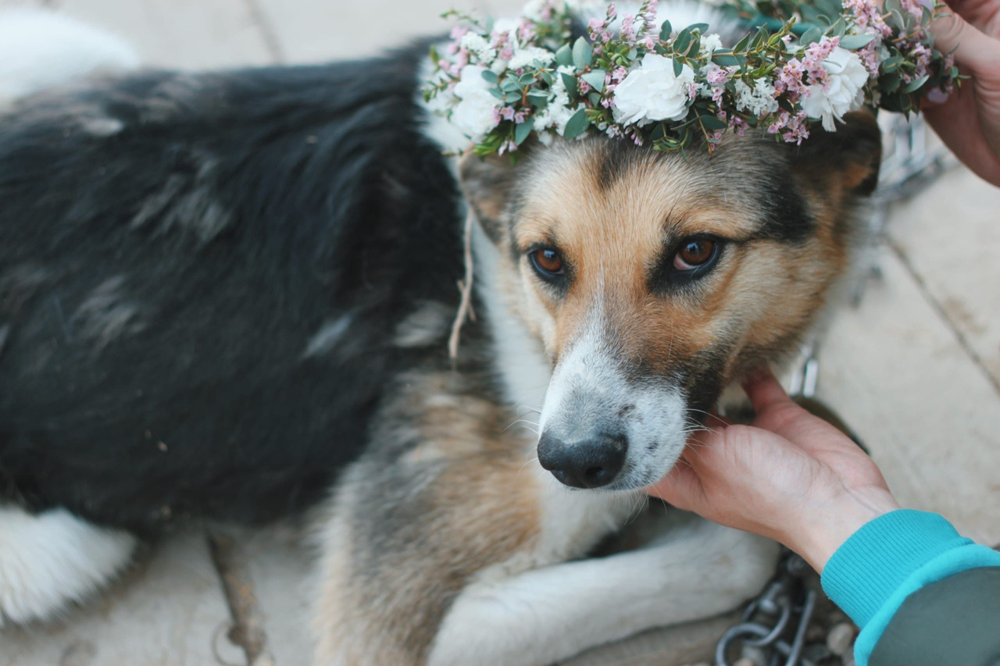

Ищем дом для Полли
Девчонка среднего размера, яркого окраса. Полли очень осторожная и недоверчивая. Очень избирательна к людям.
Девчонка среднего размера, яркого окраса. Полли очень осторожная и недоверчивая. Очень избирательна к людям.
Целуйте лапку 😘 Ваша Юкки 😍
Джерри - молоденькая симпатичная собачка, милый батончик на коротких лапках☺. Размером чуть больше таксы (жирненькой такой, среднестатистической😄). Возраст - около года со всеми вытекающими последствиями: любит играть⚽, беситься, стоять (сидеть, висеть) на голове🙃. Гиперактивная моська, которая не даст скучать своему человеку.
Красивущая и ласковая собака😌 средних лет. Очень любит людей😍 и тоскует без внимания😔. Пристраиваем Найду в вольер с теплой будкой, в квартире она жить не сможет, оставаясь одна разберет вам всю мебель (был прецедент с вагончиком🙈). Хотя, не исключено, что Найда поумнела, помудрела и в своем собственном доме у нее будет все иначе☺ Собачка стерилизована, привита💉, обработана🐛, чипирована✍🏻. Приезжайте знакомиться с Найдой в любую субботу, предварительно позвоните
Герда - одна из двух щенков, подброшенных когда-то на соседнюю ферму, рядом с Реабилитационным Центром. Ее братик Кай - уже дома🏡. И малышке тоже очень нужна семья😔. Девчонка очень смышленая🤓, активная🙃, любознательная☺. Не по годам смелая. С огромным интересом изучает окружающий мир🌍. Очень любит людей и всевозможные игры⚽ Вырастет среднего размера. Возраст около 4 месяцев. Кушает сухой корм для щенков. Привита💉, обработана от паразитов🐛, в ближайшее время будет стерилизована. Звоните малышке по телефону ☎(4942) 504731 и приезжайте знакомиться в любую субботу.
Не просто так эта замечательная собака получила свою кличку🥰. Уж очень она душевная😌. Дуняша не будет висеть у вас на шее, требуя внимания🙃, она скромненько подойдет и уткнется носом в колено, как бы говоря: «если ты не сильно занят, может быть ты погладишь меня немножко😇» Вот такая Душечка нежная и ласковая собачка😘.